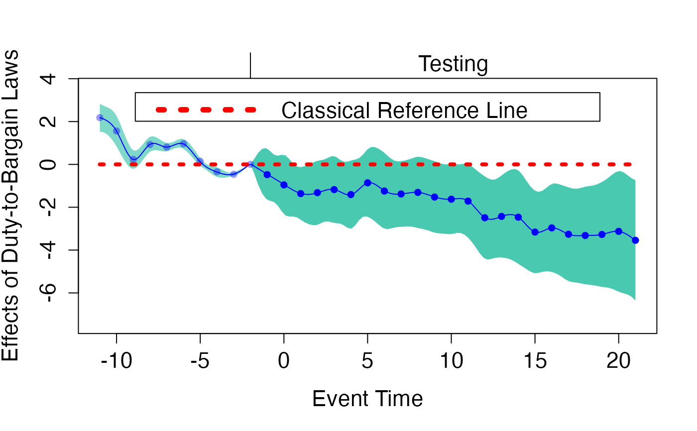
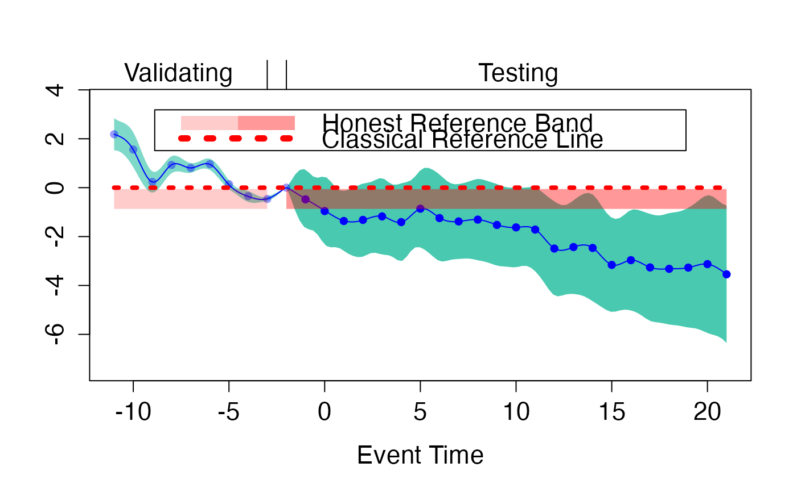
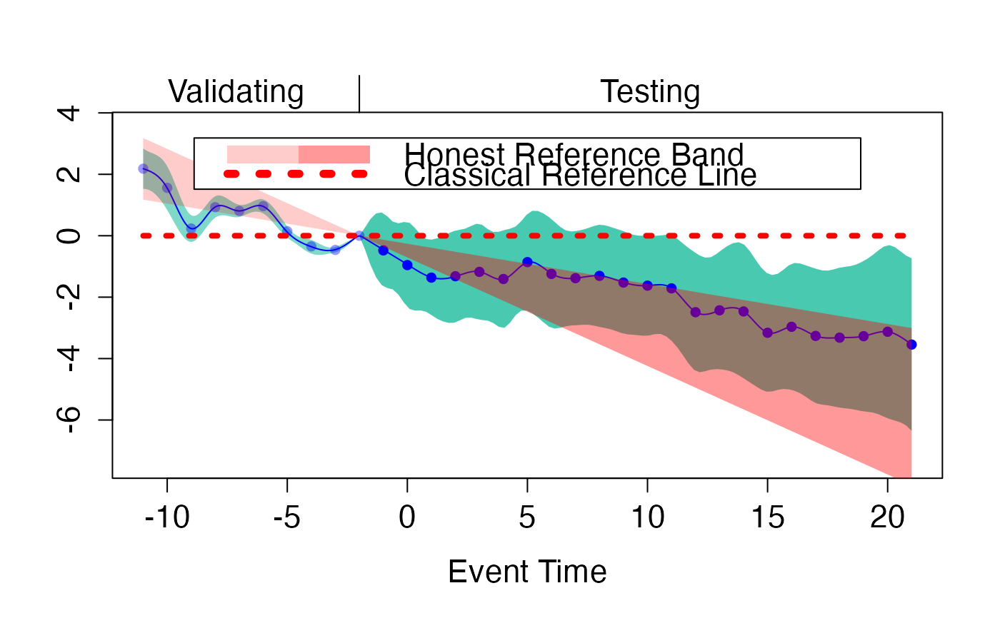

"fdid_scb"plot.fdid_scb.RdThis function is an S3 method for plot, specifically designed for objects of class "fdid_scb".
It plots simultaneous confidence band with bounds for honest inference.
# S3 method for class 'fdid_scb'
plot(
object,
ta.t0 = NULL,
ta.s = NULL,
frm.mbar = NULL,
ftr.m = NULL,
frmtr.mbar = NULL,
post.trt = FALSE,
ci = TRUE,
pos.legend = "top",
scale.legend = 1,
...
)an object of class "fdid_scb". The object to be plotted.
a numeric value that indicates the time, right after which there is an anticipation of treatment. It should be
greater than the minimal event time and no greater than t0 in object. If it is NULL, there is no anticipation.
a numeric value of control parameter for honest inference under treatment anticipation. If NULL, the critical value \(t_{1-\alpha/2, df}\) or \(z_{1-\alpha/2}\) is applied with the same \(\alpha\) used for constructing simultaneous confidence band. If no treatment anticipation is defined in ta.t0, the value of ta.s is ignored.
a numeric value of control parameter for honest inference under functional relative magnitudes.
a numeric value of control parameter for honest inference under functional trend restrictions.
a numeric value of control parameter for combining functional relative magnitudes and functional trend restrictions.
a logical value. If TRUE, only bounds for post-treatment periods are plotted and used for honest inference.
a logical value. If TRUE, the point-wise confidence intervals are also plotted.
a character value of "top" or "bottom" that indicates the position of legend. If NULL, the legend is not printed.
a positive number that defines the size of legend. If pos.legend is NULL, the value of scale.legend is ignored.
Additional arguments to be passed to plot.
The function returns a plot with simultaneous confidence band for event study coefficients in a functional framework, together with bounds for honest inference, if properly defined.
Fang, C. and Liebl, D. (2025). Making Event Study Plots Honest: A Functional Data Approach to Causal Inference.
data(LWdata)
fdid_scb_est <- fdid_scb(beta=LWdata$beta, cov=LWdata$cov, t0=LWdata$t0)
cat("The reference time is ", LWdata$t0, ". If not NULL, the input 'ta.t0' in function 'plot' should be smaller than this value.", sep="")
#> The reference time is -2. If not NULL, the input 'ta.t0' in function 'plot' should be smaller than this value.
## simultaneous inference
par(cex.axis = 1.4, cex.lab = 1.4, cex.main = 1.4)
plot(fdid_scb_est, scale.legend=1.4)
## adding a label for Y-axis
title(ylab="Effects of Duty-to-Bargain Laws")

## honest inference under treatment anticipation
plot(fdid_scb_est, ta.t0=-3, scale.legend=1.4)

## honest inference under violation of parallel trends
plot(fdid_scb_est, frm.mbar=0.4, scale.legend=1.4)
